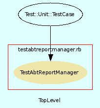

|  |
testabtreportmanager.rb
Unit testing for AbtReportManager class.
Created by Eric D. Schabell <erics@abtlinux.org> Copyright 2006, GPL.
This file is part of AbTLinux.
AbTLinux is free software; you can redistribute it and/or modify it under the terms of the GNU General Public License as published by the Free Software Foundation; either version 2 of the License, or (at your option) any later version.
AbTLinux is distributed in the hope that it will be useful, but WITHOUT ANY WARRANTY; without even the implied warranty of MERCHANTABILITY or FITNESS FOR A PARTICULAR PURPOSE. See the GNU General Public License for more details.
You should have received a copy of the GNU General Public License along with AbTLinux; if not, write to the Free Software Foundation, Inc., 51 Franklin St, Fifth Floor, Boston, MA 02110-1301 USA
- setup
- teardown
- test_generate_HTML_package_listing
- test_search_package_descriptions
- test_show_file_owner
- test_show_frozen_packages
- test_show_installed_packages
- test_show_journal
- test_show_package_dependencies
- test_show_package_details
- test_show_package_log
- test_show_queue
- test_show_untracked_files
- test_show_updates
setup method for testing AbtReportManager.
[ show source ]
# File tests/testabtreportmanager.rb, line 38
38: def setup
39: @report = AbtReportManager.new
40: @manager = AbtPackageManager.new
41: @system = AbtSystemManager.new
42:
43: # ensure tarball available without downloading.
44: FileUtils.cp( "#{$PACKAGE_PATH}/ipc-1.4.tar.gz", "#{$SOURCES_REPOSITORY}", :verbose => true ) if !File.exist?( "#{$SOURCES_REPOSITORY}/ipc-1.4.tar.gz" )
45: end
teardown method to cleanup after testing.
[ show source ]
# File tests/testabtreportmanager.rb, line 50
50: def teardown
51: # TODO: if test package frozen, unfreeze it.
52: end
Test method for ‘AbtReportManager.test_generate_HTML_package_listing()’
[ show source ]
# File tests/testabtreportmanager.rb, line 162
162: def test_generate_HTML_package_listing
163: # ensure at least one package is installed.
164: if !@system.package_installed( "ipc" )
165: @manager.install_package( "ipc" )
166: end
167:
168: assert( @report.generate_HTML_package_listing(), "test_generate_HTML_package_listing()" )
169: end
Test method for ‘AbtReportManager.test_search_package_descriptions()’
[ show source ]
# File tests/testabtreportmanager.rb, line 139
139: def test_search_package_descriptions
140: expectedHash = Hash[ "ipc-1.4" => "IPC is a program that calculates the isotopic distribution of a given chemical formula."]
141:
142: assert_equal( @report.search_package_descriptions( "ipc" ), expectedHash, "test_search_package_descriptions()" )
143: end
Test method for ‘AbtReportManager.test_show_file_owner()’
[ show source ]
# File tests/testabtreportmanager.rb, line 127
127: def test_show_file_owner
128: # ensure package installed for testing file owner.
129: if !@system.package_installed( "ipc" )
130: @manager.install_package( "ipc" )
131: end
132:
133: assert( @report.show_file_owner( "ipcFile" ), "test_show_file_owner()" )
134: end
Test method for ‘AbtReportManager.test_show_frozen_packages()’
[ show source ]
# File tests/testabtreportmanager.rb, line 89
89: def test_show_frozen_packages
90: # ensure test package installed.
91: if !@system.package_installed( "ipc" )
92: @manager.install_package( "ipc" )
93: end
94:
95: # ensure test package freeze.
96: if !@system.package_frozen( "ipc" )
97: @manager.freeze_package "ipc"
98: end
99:
100: assert( @report.show_frozen_packages(), "test_show_frozen_packages()" )
101: end
Test method for ‘AbtReportManager.test_show_installed_packages()’
[ show source ]
# File tests/testabtreportmanager.rb, line 64
64: def test_show_installed_packages
65: # ensure test pacakge installed for listing.
66: if !@system.package_installed( "ipc" )
67: @manager.install_package( "ipc" )
68: end
69:
70: assert_nil( @report.show_installed_packages(), "test_show_installed_packages()" )
71: end
Test method for ‘AbtReportManager.test_show_journal()’
[ show source ]
# File tests/testabtreportmanager.rb, line 120
120: def test_show_journal
121: assert( @report.show_journal( $JOURNAL ), "test_show_journal()" )
122: end
Test method for ‘AbtReportManager.test_show_package_dependencies()’
[ show source ]
# File tests/testabtreportmanager.rb, line 106
106: def test_show_package_dependencies
107: assert( false, "test_show_package_dependencies()" )
108: end
Test method for ‘AbtReportManager.test_show_package_details()’
[ show source ]
# File tests/testabtreportmanager.rb, line 57
57: def test_show_package_details
58: assert( @report.show_package_details( "ipc" ), "test_show_package_details()" )
59: end
Test method for ‘AbtReportManager.test_show_package_log()’
[ show source ]
# File tests/testabtreportmanager.rb, line 76
76: def test_show_package_log
77: if !@system.package_installed( "ipc" )
78: @manager.install_package( "ipc" )
79: end
80:
81: assert( @report.show_package_log( "ipc", "install" ), "test_show_package_log(install)" )
82: assert( @report.show_package_log( "ipc", "build" ), "test_show_package_log(build)" )
83: assert( @report.show_package_log( "ipc", "integrity" ), "test_show_package_log(integrity)" )
84: end
Test method for ‘AbtReportManager.test_show_queue()’
[ show source ]
# File tests/testabtreportmanager.rb, line 148
148: def test_show_queue
149: assert_nil( @report.show_queue( "install" ), "test_show_queue(install)" )
150: end
Test method for ‘AbtReportManager.test_show_untracked_files()’
[ show source ]
# File tests/testabtreportmanager.rb, line 113
113: def test_show_untracked_files
114: assert( @report.show_untracked_files(), "test_show_untracked_files()" )
115: end
Test method for ‘AbtReportManager.test_show_updates()’
[ show source ]
# File tests/testabtreportmanager.rb, line 155
155: def test_show_updates
156: assert( @report.show_updates( "ipc" ), "test_show_updates()" )
157: end